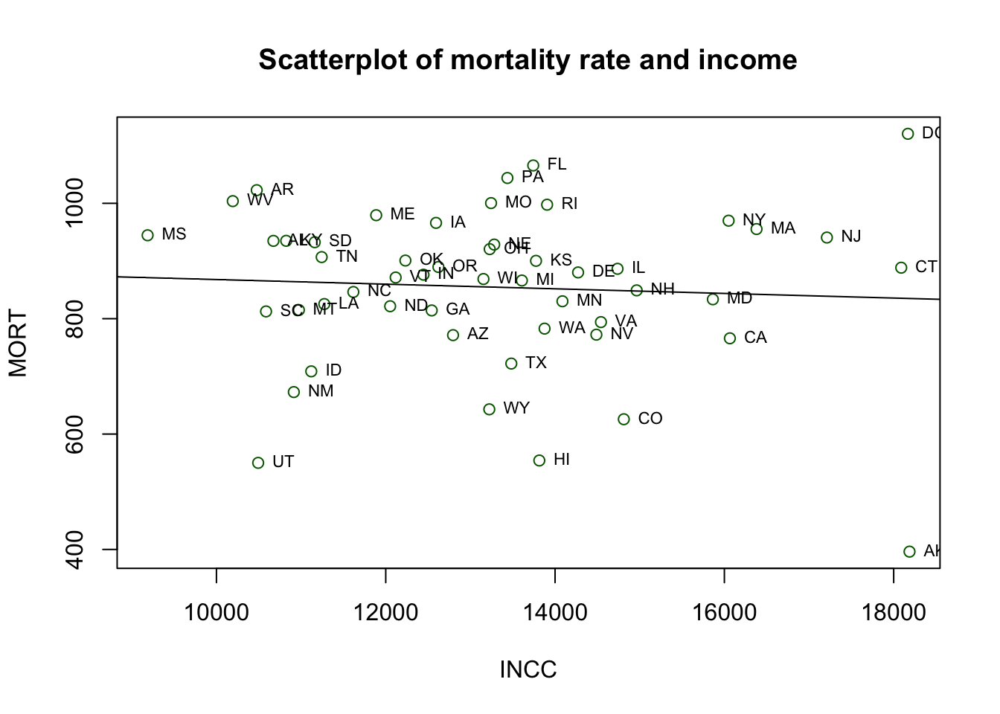
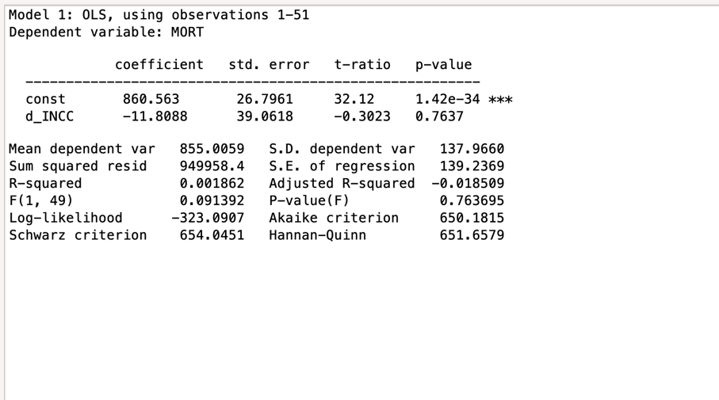
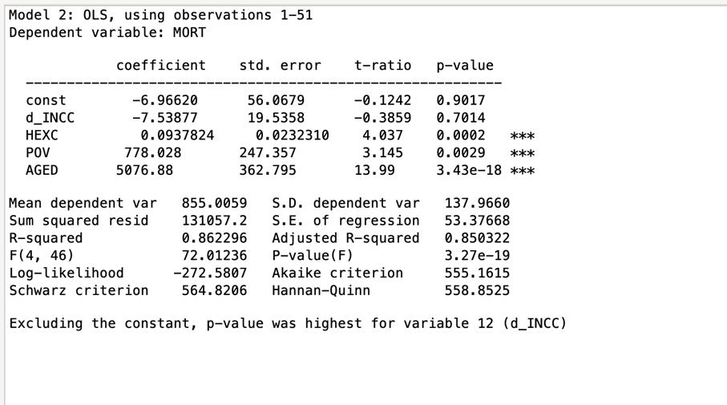
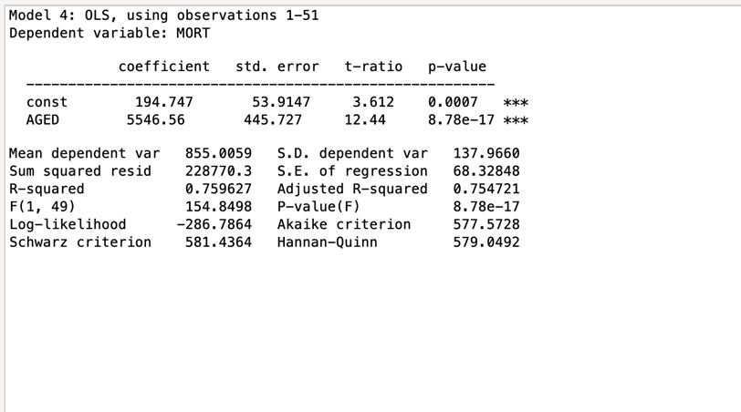
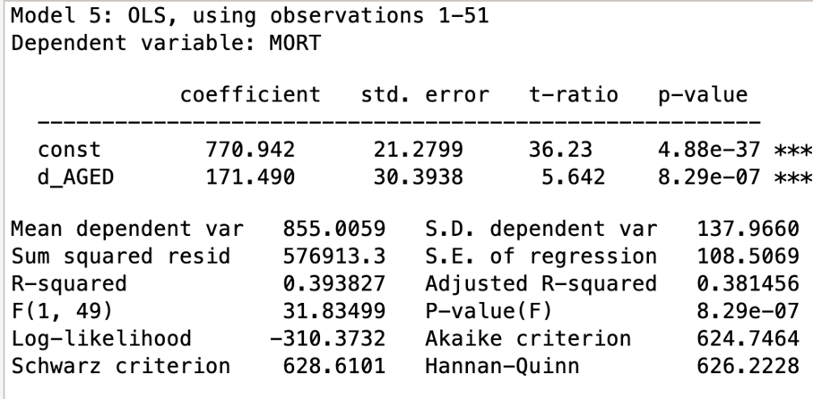
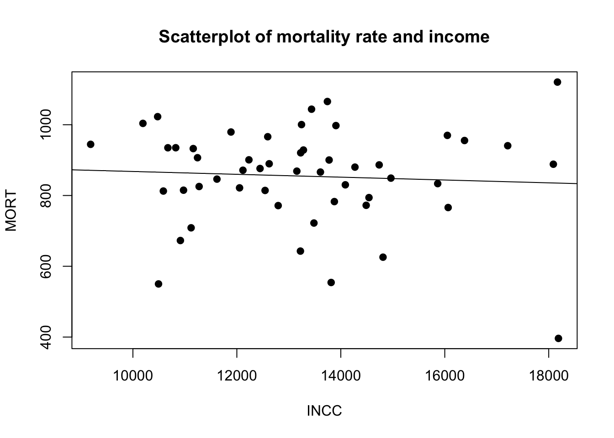

Research question (RQ): We aim to investigate the determinants of mortality rates across U.S. states.
Our research question is: “To what extent do socioeconomic factors & health-related behaviors influence mortality rates across states?”.
We use a cross-sectional dataset containing state-level data on mortality rates, income, poverty, education, alcohol consumption, cigarette consumption, healthcare expenditure, physicians per capita, urbanization, & age distribution. The dependent variable is total mortality rate per 100,000 population. The independent variables include socioeconomic indicators and health behavior variables suitable for simple and multiple regression analysis. We have found this data on Gretl itself, under Ramanathan, the name for the file is: data4-12 Mortality rates across states.
Summary statistics:
# 2. Simple regression - must come BEFORE the scatterplotenkelreg <-lm(MORT ~ INCC, data = df)summary(enkelreg)
Call:
lm(formula = MORT ~ INCC, data = df)
Residuals:
Min 1Q Median 3Q Max
-438.84 -54.43 18.05 73.39 285.39
Coefficients:
Estimate Std. Error t value Pr(>|t|)
(Intercept) 908.591705 122.238883 7.433 1.42e-09 ***
INCC -0.004044 0.009108 -0.444 0.659
---
Signif. codes: 0 '***' 0.001 '**' 0.01 '*' 0.05 '.' 0.1 ' ' 1
Residual standard error: 139.1 on 49 degrees of freedom
Multiple R-squared: 0.004008, Adjusted R-squared: -0.01632
F-statistic: 0.1972 on 1 and 49 DF, p-value: 0.659
plot(df$INCC, df$MORT,main ="Scatterplot of mortality rate and income",xlab ="INCC",ylab ="MORT",pch =1,col ="darkgreen")text(df$INCC, df$MORT,labels = df$obs,cex =0.7,pos =4)abline(enkelreg)

The dataset consists of 51 cross-sectional observations (all 50 states plus District of Columbia), with no missing values. The dependent variable MORT (mortality rates per 100 000 population), has a mean of 855,01 and a standard deviation of 137,97, ranging from 396,20 to 1120,5. The coefficient of variation is 0,16136 in the dependent variable. This is relevant for the research question because mortality rates vary meaningfully across states, making simple and multiple regression model analysis appropriate.
2. Simple Regression Model
a)
enkelreg <-lm(MORT ~ INCC, data = df)enkelreg
Call:
lm(formula = MORT ~ INCC, data = df)
Coefficients:
(Intercept) INCC
908.591705 -0.004044
The model is estimated to use 51 observations. The estimated intercept is 908,592 and the coefficient for income (INCC) is –0,00404. The R-squared is 0,0040 and the F-statistic is 0,197 with a p-value of 0,659.
2B:
summary(enkelreg)
Call:
lm(formula = MORT ~ INCC, data = df)
Residuals:
Min 1Q Median 3Q Max
-438.84 -54.43 18.05 73.39 285.39
Coefficients:
Estimate Std. Error t value Pr(>|t|)
(Intercept) 908.591705 122.238883 7.433 1.42e-09 ***
INCC -0.004044 0.009108 -0.444 0.659
---
Signif. codes: 0 '***' 0.001 '**' 0.01 '*' 0.05 '.' 0.1 ' ' 1
Residual standard error: 139.1 on 49 degrees of freedom
Multiple R-squared: 0.004008, Adjusted R-squared: -0.01632
F-statistic: 0.1972 on 1 and 49 DF, p-value: 0.659
When INCC is 0, expected mortality is 908.592 (ß0). Since an income level of zero is outside the realistic range of the data, the intercept mainly serves as a technical component that determines where the regression line crosses the vertical axis. The interesting parts comes in the coefficient of INCC (ß1). The coefficient of INCC measures the change in mortality associated with a one-unit increase in income. A one unit increase in income reduces the predicted mortality rate by 0.004 units, holding everything else constant.
Mathematically:
Expect that income increases by 1000 units: 1000*004044∼4.04 The model suggests a negative relationship between income and mortality. A higher income is associated with lower mortality. Which is the public conception, which is based on that higher income can afford better quality food. In the US where health insurance is necessary for good healthcare.
2c)
summary(enkelreg)
Call:
lm(formula = MORT ~ INCC, data = df)
Residuals:
Min 1Q Median 3Q Max
-438.84 -54.43 18.05 73.39 285.39
Coefficients:
Estimate Std. Error t value Pr(>|t|)
(Intercept) 908.591705 122.238883 7.433 1.42e-09 ***
INCC -0.004044 0.009108 -0.444 0.659
---
Signif. codes: 0 '***' 0.001 '**' 0.01 '*' 0.05 '.' 0.1 ' ' 1
Residual standard error: 139.1 on 49 degrees of freedom
Multiple R-squared: 0.004008, Adjusted R-squared: -0.01632
F-statistic: 0.1972 on 1 and 49 DF, p-value: 0.659
From the data we can see that we fail to reject H0, and we will therefore keep H0. The income coefficient is not statistically significant at the 5% level
2d) From the summary statistics table: \[\widehat{MORT} = 908.592 - 0.00404445 \cdot INCC\]
INCC represents income per capita, measured in U.S. dollars for each state.
In our dataset:
INCC min = 9187
INCC mean = 13249
INCC max = 18187
Substitute into the equation:
When INCC = 9187:\(\widehat{MORT} = 908.592 - 0.00404445 (\cdot INCC\))9187≈871,44
When INCC = 13249: \(\widehat{MORT}\) ≈855,01
When INCC = 18187: \(\widehat{MORT}\) ≈835,04
Using the estimated OLS model, we compute predicted mortality rates for different levels of income (INCC). Predictions are reported for low (min), average (mean), and high (max) income values observed in the sample.
2e)
# Prediction interval - replace X with your INCC valuepredict(enkelreg, newdata =data.frame(INCC =854.1), interval ="prediction", level =0.95)
fit lwr upr
1 905.1373 543.0205 1267.254
This means that the model explains pretty much none of the variation of the mortality. That means that we can’t use income as a regressor for simple regression to explain what leads to a higher mortality rate.
3. Multiple regression
a) Our dependent variable is still mortality. Our additional variables are: INCC, AGED, TOBC and EDU2. INCC, per capita income, is included as the main explanatory variable of interest.The reason for choosing EDU2 over EDU1 as to complete 4 years of college, you would have to complete high school or other equivalents. We expect that there would be a minor difference between a college and no college education. Economic theories and empirical research questions suggest that higher incomes are associated with better access to healthcare and improved living situations and healthier lifestyles. AGED, is the proportion of the population aged over 65 years, is included because mortality rates are naturally higher in states with older populations. Controlling for age structures ensures that the estimated effect of income is simply capturing demographic differences across states. TOBC, cigarette consumption per capita, is included because smoking is a major risk factor for mortality. Differences in smoking behavior across states may influence mortality independently of income. EDU2, the proportion of the population completing 4 or more years of college, is included as a proxy for human capital and health related behavior. Higher education levels are generally associated with better health awareness, better access to healthcare and healthier lifestyles. Including these variables allows our coefficient on INCC to be interpreted as the partial effect of income on mortality, holding age structure, smoking behavior, and education constant.
data <- read.csv(“data-raw/csv/Dataset_in.csv”) head(data) model <- lm(MORT ~ INCC + EDU2 + TOBC + AGED, data = data) summary(model) confint(model)
The multiple regression model is estimated by using 51 cross-sectional observations with MORT as the dependent variable. The estimated coefficients are:
INCC: 0.00466
EDU2: –174.61
TOBC: 1.3856
AGED: 5432.88
The model has an R-squared of 0.819 and an Adjusted R-squared of 0.803, indicating that approximately 80% of the variation in mortality across states is explained by the included variables. This is a major improvement over the previous situation with an R-squared of about 0,004.
The overall F-statistics are 51.87, with a p-value of 1.78e-16, indicating that the model is jointly statistically significant at the 5% level.
c) The coefficient on INCC is 0.00466. This implies that per one dollar that increases in per capita, income is associated with an increase of 0.00466 in the mortality rate, holding other variables constant. Interpreting this per $1000 increase: 1000*0.00466=4.66
Thus, a $1000 increase in per capita income is associated with an increase of approximately 4.66 deaths per 100,000 population, holding age structure, smoking, and education constant. However, this effect must be evaluated in terms of statistical significance.
The coefficient on EDU2 is –174.61. Since EDU2 is measured as a proportion, a 0.01 (one percentage point) increase in the share of college-educated individuals changes mortality by: -174.61*0.01=-1.75
Thus, a one percentage point increase in college education is associated with a reduction of approximately 1.75 deaths per 100,000 population, holding other factors constant.
The coefficient on TOBC is 1.3856, indicating that higher cigarette consumption is associated with higher mortality. A one-unit increase in cigarette consumption increases predicted mortality by approximately 1.39 deaths per 100,000 population, holding other variables constant.
The coefficient on AGED is 5432.88. Since AGED is measured as a proportion, a 0.01 (one percentage point) increase in the share of the population over 65 increases mortality by: 5432.88*0.01=54.33
Thus, a one percentage point increase in the elderly population is associated with approximately 54 additional deaths per 100,000 population, holding other variables constant. This is as expected as most common source of death in the US in 2023 was heart disease (National Center for Health Statistics, u.d.), and its more prevalent in the older population (Maddalena Lettino, 2022). If we also consider our everyday life and situation we most often hear of elderly people passing away. It thus provides further evidence for our everyday belief of older age being the largest contributor to old age.
d)
To evaluate the statistical significance of the independent variables, we examine their p-values at the 5% significance level. A variable is considered statistically significant if its p-value is below 0,005.
From the regression results, the variables TOBC and AGED are statistically significant, with p-values of 0,0026 and 3,98e-16 respectively. This indicates that cigarette consumption and the proportion of the population over age 65 have a statistically significant association with mortality rates across states.
In contrast, the variables INCC and EDU2 have p-values of 0,04643 and 0,6970, which are both greater than 0,05. Therefore, we fail to reject the null hypothesis that their coefficients are equal to zero. This suggests that income per capita and the share of college-educated individuals do not have statistically significant effect on mortality in this model.
e) Compared to the simple regression model, the multiple regression model provides a substantially better fit. In the simple regression, where mortality was explained only by income, the R-squared was approximately 0,004, indicating that income alone explained almost none of the variation in mortality across states.
In the multiple regression model, the R-squared increases to 0,819, meaning that approximately 81,9% of the variation in mortality rates can be explained by the included variables. This suggests that mortality is influenced by several socioeconomic and health-related factors than income alone.
We also saw the effect of omitted variable bias when going from a simple regression to a multiple regression. We saw that there was a change from a negative value to a positive one. The bias that where prevalent in this set is negative due to the slope-coefficient in simple regression being negative subtracted by the positive multiple regression slope, giving a final negative value, and thus and negative bias. Another factor to consider is that in states with an older population there is likely an higher income as well.
The inclusion of variables such as cigarette consumption and the share of elderly population significantly improves the explanatory power of the model, highlighting the importance of considering multiple determinants when analyzing moratity differences across states.
4.1 Dummy Variable Analysis
A) We saw that income had a negative effect on mortality. Now we want to find out if there is a threshold where it changes? Therefore, we made a dummy variable where we set the mean as the threshold for effect the dummy variable. The mean where 13249.2, and it was set to be higher than mean income. We have seen that if the income is higher.

We can see that a higher income than the mean will lead to a lower mortality. But this is insignificant as seen p the p-value being higher than the significance level of 0,05. With our significance level of 76% there is a large chance that the relationship between the dummy variable and income occurred by chance. We can therefore not conclude that the income threshold as an effect on the dependent variable. We therefore must add control variables to conclude if that it is income alone that drives the lower mortality, or if its other factors that tend to occur in high income states. The control variables we want to have a look at is proportion of population over 65 (AGED), poverty (POV) and per-capita health expenditure by state (HEXC).

We can directly see that it these variables that have the biggest impact on mortality. With the control variables we can now account for 86% of the variation of the model. The model flags our dummy variable, since it’s having the biggest p-value for a non-constant. We can therefore see that an income threshold doesn’t have an significant effect on mortality. The other control variables do though, where age has the biggest effect. We wanted to have a further look at it and found that 76% of the variation is explained by age alone.

This is quite ordinary, due to most death reporting’s in this health groups being from age-related diseases.
b) The dummy variable was constructed to test whether states with income above the sample mean have systematically different mortality rates compared to states with income below the mean. The threshold was set at the mean income level of 13 249,2. The dummy variable therefore takes the value 1 for states with income above the mean and 0 otherwise. The regression results indicate that the coefficient for the income dummy variable is not statistically significant. The p-value associated with the dummy variable is higher than the 5% significance level, meaning that we fail to reject the null hypothesis that the dummy coefficient is equal to zero. This implies that there is no statistical evidence that states with income above the mean, when the dummy variable is considered on its own. When additional control variable is included in the model, such as the share of the population over 65 years (AGED), poverty rates (POV), and per-capita healthcare expenditure (HEXC), the explanatory power of the model increases substantially. The R-squared rises to approximately 0.86, indicating that these variables collectively explain a large portion of the variation in mortality across states. However, even after controlling for these factors, the income dummy variable remains statistically insignificant.
This suggests that the observed differences in mortality rates between stats are not primarily driven by whether income is above or below the mean threshold. Instead, demographic factors, particularly the proportion of elderly individuals in the population, appear to play a much more important role. Age structure has the strongest impact on mortality rates, which is consistent with the fact that mortality naturally increases with age. To test this, we made a new dummy variable were wanted to how much of the model is explained by an age. We therefore made a dummy variable where the threshold is an age above the median. With this dummy variable we found that 40% of the model is explained by the dummy variable.
<–

–>
We can therefore see that aged is one of the major factors for explaining mortality. We can also see that the states in with an age above the median has an higher mortality rate by 171.49, which provides further evidence for age being the major factor for explaining mortality. The P-value is also significant which provides evidence for that age being a factor in mortality.
An interaction effect would be relevant if the relationship between income and mortality differed systematically between high- and low-income states. However, since the dummy variable itself was not statistically significant, adding an interaction term would further complicate the RQ without adding a meaningful explanation. A fixed effect specification was therefore considered sufficient for the purpose of this analysis.
In conclusion, the dummy variable analysis does not provide evidence that an income threshold effect exists in this dataset. Mortality differences across states are better explained by demographic and health-related variables rather than by a simple high-income versus low-income classification. We found evidence for this through the dummy variable created for age above the median.
5. Model selection and Analysis
a) The different regression models can be used to predict mortality rates for given values of the explanatory variables. In the simple regression model, mortality is explained only by income (INCC). However, the results from this model show that income alone does not explain much of the variation in mortality across states. The R-squared is around 0.004, which means that the model explains almost none of the variation in the dependent variable. Because of this, predictions from the simple regression model are quite unreliable and the model does not give a very good explanation of mortality differences between states.
In the multiple regression model, several additional variables were included in order to better explain mortality rates. The model includes income (INCC), the proportion of the population over 65 years (AGED), cigarette consumption (TOBC), and the proportion of the population with four or more years of college education (EDU2). By including these variables, the model considers both demographic factors and health-related behavior. This model has a much higher explanatory power, with an R-squared of 0.819, meaning that about 81.9% of the variation in mortality rates across states can be explained by the variables in the model. This also means that predictions from this model are more reliable compared to the simple regression.
In the dummy variable model, states were divided into two groups depending on whether their income was above or below the sample mean. The idea was to test if there was some kind of threshold effect for income. However, the results show that the dummy variable is not statistically significant. This suggests that simply separating states into high-income and low-income groups does not explain mortality differences in a meaningful way.
b) Based on the results from the analysis, the multiple regression model seems to be the most appropriate model for predicting mortality rates.
The simple regression model performs poorly because it only includes income as an explanatory variable. Mortality is influenced by many different factors, and income alone is clearly not enough to explain the variation across states. We therefore have met the effect of omitted variable bias — this occurs when excluded variables, such as age distribution, smoking habits and education level, both affect mortality and are correlated with income. As a result, the coefficient on income absorbs the effect of these missing variables, which is also reflected in the very low R-squared value.
The dummy variable model also does not perform as well as the multiple regression model. Even though it tries to capture differences between higher-income and lower-income states, the results show that the dummy variable is not statistically significant. This indicates that the threshold effect of income does not seem to play an important role in explaining mortality differences.
The multiple regression model, on the other hand, includes several variables that are likely to influence mortality. In particular, the proportion of elderly people and cigarette consumption appear to have strong effects on mortality rates. The model also has a much higher R-squared value compared to the other models. Because of this, the multiple regression model provides a better and more realistic explanation of mortality differences across states.
Overall, the multiple regression model seems to give the most reliable predictions and therefore it is the preferred model in this analysis.
Appendix
source("Script/estm.R")

R/wordcount.R
Word count
Word count for assignment_r.qmd : 3008 words
Bibliography
Maddalena Lettino, J. M. (2022, Februar 15). Cardiovascular disease in the elderly: proceedings of the European Society of Cardiology—Cardiovascular Round Table - Oxford Academic. Hentet fra Oxford Academic: https://academic.oup.com/eurjpc/article/29/10/1412/6529006
National Center for Health Statistics. (u.d.). FastStats - Leading Causes of Death. Hentet Mars 15, 2026 fra FastStats: https://www.cdc.gov/nchs/fastats/leading-causes-of-death.htm
Kivedal, B.K (2023) Anvendt Statistikk og Økonometri (1. utgave). Universitetsforlaget.